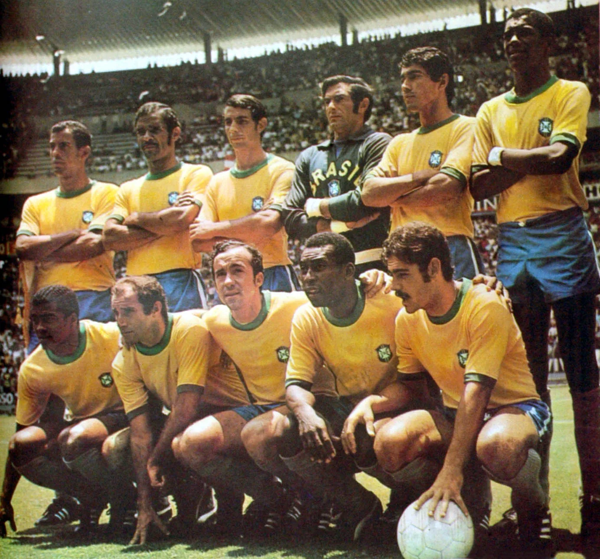

UM PAÍS. UMA CAMISA. MILHÕES DE HISTÓRIAS.
BRASIL
EM COPAS.
Mais que futebol. Uma história que atravessa gerações, emociona um país e veste o mundo de amarelo.
Explorar a história★ ★ ★ ★ ★O ÚNICO PRESENTE EM TODAS.
RECORTE HISTÓRICO · 1930—2022
RECORTE HISTÓRICO · 1930—2022
01 / A CAMINHADA
CADA COPA,
UM CAPÍTULO.
De Montevidéu ao Catar. Percorra as edições e reviva o caminho da camisa amarela.
22 EDIÇÕES · UMA HISTÓRIA SEM INTERRUPÇÕES02 / AS CONQUISTAS
O PESO DE
CINCO ESTRELAS.
Cinco vezes no topo do mundo.
Cinco times que se tornaram eternos.
★★★★★
03 / ALÉM DA VITÓRIA
NEM TODA HISTÓRIA
TERMINA EM FESTA.
O futebol também é feito de silêncios. Lembrar as derrotas é reconhecer a dimensão humana do jogo.
04 / GENTE QUE VIROU HISTÓRIA
O TALENTO É NOSSO.O LEGADO É DO MUNDO.
Camisas diferentes. A mesma arte.
Conheça alguns dos nomes que fizeram o Brasil.
Role a página para conhecer as lendas. Nos cards, use as setas esquerda e direita, Home ou End. Tab percorre os jogadores e segue para a próxima seção.
05 / A GRANDEZA EM DADOS
O FUTEBOL EMOCIONA.
OS NÚMEROS CONTAM.
Um retrato da seleção masculina nas Copas, até a edição de 2022. Explore as conquistas, os gols e as campanhas.
O caminho do gol
ARTILHEIROS DO BRASILUma camisa, 114 jogos
1930—202272,2%APROVEITAMENTO
Vitória = 3 pontos; empate = 1. Disputas por pênaltis contam como empate.
Gols por edição
237 GOLS MARCADOSCada barra é uma Copa. Passe o cursor ou use Tab para ver o total.
06 / O JOGO EM IMAGENS
INSTANTES.
PARA SEMPRE.
O que uma fotografia guarda, a memória devolve. Abra as imagens e entre na história.
07 / A BOLA ESTÁ COM VOCÊ
VOCÊ TEM
FUTEBOL
NA MEMÓRIA?
Oito perguntas. Quase um século de história. Entre em campo e teste o que você sabe sobre a seleção.
SEM CRONÔMETRO. VALE A PAIXÃO.